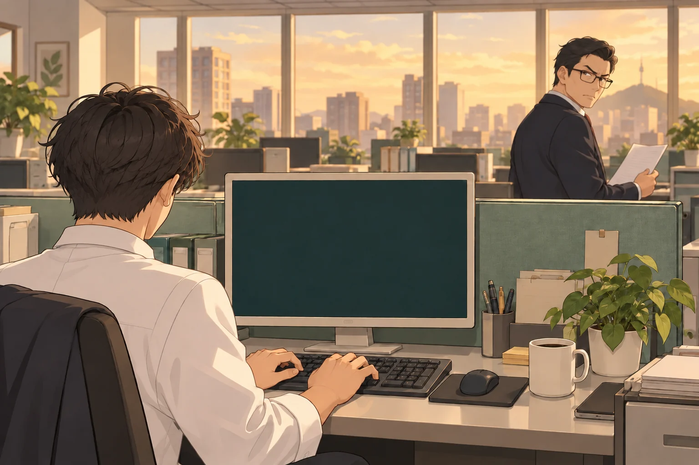

딴짓은 대담하게, 눈치는 빠르게.

팀장님이 안 볼 때 몰래 게임하세요.노란 경고가 뜨면 재빨리 업무로 전환!
PC는 SPACE · 모바일은 업무 / 딴짓 버튼
딴짓하는 동안 점수가 쌓입니다. 연속 2초마다 콤보가 올라 최대 3배!
느낌표가 뜨면 업무로 전환하세요. 들키지 않고 넘기면 눈치 보너스 120점!
20초마다 팀장님의 눈치가 빨라집니다. 업무 중에는 의심도가 서서히 내려갑니다.
이 게임을 플레이하려면 브라우저의 JavaScript를 켜 주세요.